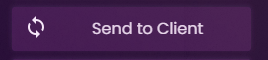

Installation de Everest
Pour commencer, vous devez télécharger Olympus
Ouvrez-le et faites des mises à jour si besoin
Cliquez ensuite sur Install Everest
Puis sur Manage
Retournez à la page précédente et célectionnez la version stable
Et installez Everest (ça peut prendre un certain temps)
Après l'installation terminée lancez maintenant votre jeu et allez dans le menu Options des mods
Mettez Mettre à jour les mods au démarrage sur Oui

Tout devrait maintenant fonctionner
Installation de Celeste Net
Pour commencer, vous devez télécharger ce mod, ouvrez-le avec Olympus
Une fois télécharger, lancez votre jeu et en parallèle rendez-vous sur ce site web
Puis cliquez sur Link your account
Connectez-vous ensuite avec Discord, une fois de retour sur le site cliquez sur Send to Client
Retournez ensuite sur le menu du jeu et allez dans le menu Options des mods
Allez sur l'option Connected et mettez-le sur Oui

Lancez votre partie et totu devrait maintenant fonctionner
Retour à l'accueil